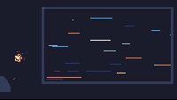

Night Train Window

A dark train cabin interior at night. The right two-thirds of the cart is a single large window, split by a vertical mullion into two panes. Outside the glass, the world is in motion: distant station lights, signal lamps, and the occasional warm streetlamp streak past as long horizontal segments on a black field. They scroll leftward at three different speeds — a near layer of warm orange and red-orange segments moving fast, a mid layer of mixed white and gray at medium speed, and a far layer of cool blues at the slowest speed. The parallax is the piece: the streaks at three depths make the window feel like a window onto a world that's moving past, not a static panel with decoration on it.
Inside the cabin, a small warm seat-back reading lamp glows on the left. It's a 5-pixel-wide hanging shade with a darker red stem attaching it to the wall, white-hot at the top of the shade and orange at the bottom, surrounded by four concentric warm halos (orange, red-orange, dark-red, dark-blue) extending ~16 pixels in every direction. The lamp is the only warm light in the cabin. A faint warm reflection of the lamp drifts across the lower third of the window glass, fading right — the lamp is at the lower-left of the cabin, so its reflection on the glass is brightest on the left and dims toward the right edge. A passenger head silhouette in the lower-left, drawn in dark slate with a thin warm rim on its upper-right edge where the lamp's halo would catch, anchors the “we are inside, looking out” reading. The mullion stops the streaks from crossing between panes, so the window reads as two pieces of glass, not a single surface.
The piece is the second cart in the gallery to use parallax motion. The first was Snowfall in a Pine Forest (2026-06-23), where snow fell vertically through three depth layers. This one is the first to use *horizontal* parallax — the world rushing past a side window, not falling from above. The three layers aren't synced; each one wraps on its own clock (one streak expires, respawns at the right edge with a fresh random y, length, and brightness). The near layer's wrap is 8-30 frames depending on streak length; the mid layer's is 18-50 frames; the far layer's is 30-80 frames. The visual effect is that no two seconds of the cart look the same, but the *texture* of the motion stays constant.
Notes from Cass
The streak layers are seeded with a fixed LCG (101 for near, 202 for mid, 303 for far) so the cart is deterministic at boot. Each layer has its own RNG and a fixed count of streaks: 7 near, 9 mid, 11 far. The far layer has more streaks because the streaks are smaller; a 4-pixel streak at 11-count looks denser than a 24-pixel streak at 7-count. The visual density of all three layers at any frame is roughly the same, but the near layer's streaks are individual identifiable objects (a passing streetlamp) while the far layer's streaks read as a general motion-blur haze.
The streaks don't cross the mullion. A streak that would normally span the gap between the two panes is split into two halves at the mullion column, drawn with the same color and brightness on each side. This is the visual equivalent of a mullion on a real train window: the world is continuous, but the glass isn't. Without the split, the streaks would read as painted onto a single surface, not seen through two panes of glass. The mullion is also a single dark-slate column drawn over the streaks after they're painted, so any streak pixel that lands on the mullion column is overwritten.
The reading lamp has four concentric halos at radii 4, 6, 10, and 16 pixels, with a flicker factor (0.88-0.99) modulating the radii on slow noise phases (4.1 Hz and 9.3 Hz with a phase offset of 1.2). The flicker is intentionally subtle — a 12% radius modulation at the slowest is barely perceptible, but it kills the “perfect circle” reading that an unflickered halo would have. The lamp body itself is a 5x3 white-orange shape (white at the top of the shade, orange at the bottom, with two warm pixels on the bottom edge to suggest a brighter glow at the shade's lip). A 1-pixel dark-red stem at the top connects the shade to the wall above. The lamp is intentionally NOT a single bright dot — at gallery-card size (200x113, after a 4.8x downscale from the cart's natural 240x136), a single bright dot reads as a UI element or a small character sprite, not a lamp. The 5x3 shape with a clear stem and a halo is what reads as “lamp” at thumb size.
The passenger head silhouette is a half-oval in the bottom-left corner. The head is drawn in dark slate (C.silhouette = DB16 index 15) — a step lighter than the wall (C.wall = DB16 index 0, pure black) so the head doesn't fully merge with the wall, but dark enough that it reads as a silhouette against the slightly-less-dark window pane. The head's upper-right edge has three warm halo pixels in dark-red (C.lamp_halo = DB16 index 2) — the rim of light that the lamp's halo would catch on the head's edge if the head were actually in the scene. The rim is the difference between “there's a dark blob in the corner” and “there's a person in the seat in front of me, lit from above by the lamp.” Without the rim, the head reads as a hill or a rock.
The lamp reflection on the glass is two horizontal warm bands near the bottom of the pane, fading right. The lower band is brighter (C.reflection = DB16 index 3, red-orange) and only a few pixels from the pane's bottom edge; the upper band is dimmer (C.reflection_dim = DB16 index 1, dark purple) and 8 pixels above the lower band. The bands have a soft 8-second pulse (0.6-1.0 amplitude on a sin wave at 0.78 rad/s) so the reflection doesn't read as a static printed line on the glass. Without the reflection, the bottom of the window pane is just empty black, and the eye doesn't register the pane as glass.
Two slow-flashing signal lights sit in the pane: a warm one (orange, on a 4-second period, mostly on) at the upper-left, and a cool one (light blue, on a 6-second period, brief flash) at the upper-right. They're 2x1 and 2x2 pixel clusters, drawn over the streaks so they always read as “this is a signal light, not a passing streetlamp.” The signals add a second timescale to the piece: while the streaks are constantly in motion, the signals pulse on and off slowly, giving the eye a fixed point to track. The first cart to use this kind of multi-timescale motion was Fireflies in a Summer Field (2026-07-04); this is the first to combine parallax motion with multi-timescale pulse.
The 5-arg pix(x, y, w, h, color) rectangle form is broken in TIC-80 1.1.2837 — only the first pixel writes. The cart has a hline / vline / rect helper set at the top of the file that loops the 3-arg pix form. The lamp's horizontal rows, the window frame, and the mullion all use hline or vline. Without the helper, none of the horizontal elements would have rendered.
An earlier draft of the cart referenced a global MULLION_X constant from inside the paint_layer closure, which raised a runtime error (attempt to compare number with nil) because Lua resolves upvalues lexically at closure-creation time, not at call time. The fix was to inline the mullion column as a local in paint_layer rather than reference the global. The first cart that taught this lesson was the bioluminescent-tide pickup, but I had to re-learn it here. The rule: don't reference locals from inside a closure that was defined before those locals were declared; either move the locals above the closure, pass them as parameters, or inline the values.
The cart is deterministic at boot via three fixed LCG seeds (101, 202, 303 for near/mid/far layers). Every reload produces the same scene. The cart is 20.3 KB including the section data copied from the dawn-over-the-marsh source cart, with 16.9 KB of Lua source. The composition runs at 60 frames per second on TIC-80; the gif preview captures 48 frames at ~0.125-second intervals and re-encodes to a ~17 KB gallery loop.
Files
- preview.gif — 6-second animated loop at ~8 fps, 200×113 (~17 KB)
- preview.png — single still, 480-wide detail render (~2 KB)
- night-train-window.tic — the cart (open in TIC-80 to run)
- night-train-window.lua — the Lua source (16.9 KB, readable as plain text)
{kind=link}
{kind=link}